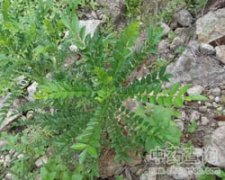

鹰不泊

拼音
Yīnɡ Bù Bó
别名
乌鸦不企树、竻当（《岭南采药录》），鸟不宿、画眉架（《岭南草药志》），刺倒树（广州部队《常用中草药手册》）。
来源
为芸香科植物勒欓的根。全年可采。
生境分布
生于荒地、山坡、溪谷灌木丛中或疏林中。分布我国南部。
药材特点
常绿灌木或乔木，高可达12米。干和枝具红褐色的皮刺。叶互生；单数羽状复叶，小叶7～23枚：总轴长7～12厘米，有少刺或无刺；小叶斜方状倒卵形或斜矩圆形，长2～5厘米，宽1～2厘米，顶生小叶矩圆形，长可达7厘米，先端钝，基部狭而成一短柄，边全缘稍作波浪形；或中部以上有不明显的浅圆锯齿。圆锥花序顶生，疏散的3歧，或2～3次伞形花序式的分枝，约与叶等长；花序柄长5～9厘米；花单性，萼片5，卵形；花瓣5，白色，长约2毫米；雄花的雄蕊5，退化心皮短小；雌花的雄蕊退化为鳞片，心皮2，柱头头状。蓇葖果紫红色，有粗大腺点。种子黑色而亮。花期6～8月。果期9～10月。 本植物的嫩叶（鹰不泊薳）亦供药用，另详专条。果皮在广东、广西等地作土花椒使用，参见"花椒"条。
性状
无性状数据
性味
《本草求原》："辛，温。"
功能主治
祛风，化湿，消肿，通络。治咽喉肿痛，黄肿，疟疾，风湿骨痛，跌打挫伤。 ①《本草求原》："理痰火、酒痰，开喉咽肿痛。浸酒法风，理跌打。" ②《岭南采药录》："去风，治黄肿。又治伤寒，黄食证。" ③《生草药手册》："治小儿百子痰（肚胀，小便短，胃呆，青筋络肚者名百子痰病）。" ④《岭南草药志》："化湿，驱风，消肿，退黄，理臌，治疟退热。"
用法用量
内服：煎汤，1～2两；或浸酒饮。外用：浸酒擦患处。
化学成分
树皮含香叶木甙、橙皮甙、勒欓素，又含甾醇、酚性成分、有机酸。根皮含勒欓碱、橙皮甙、香叶木甙、勒欓素。
药理作用
1：无药理作用数据
摘录
《中药大辞典》